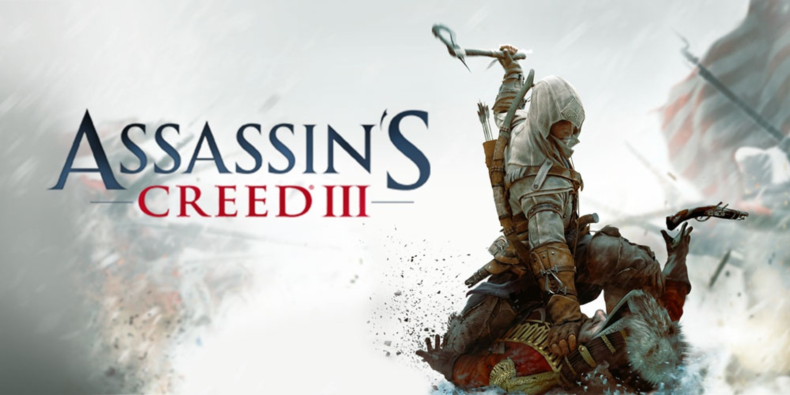
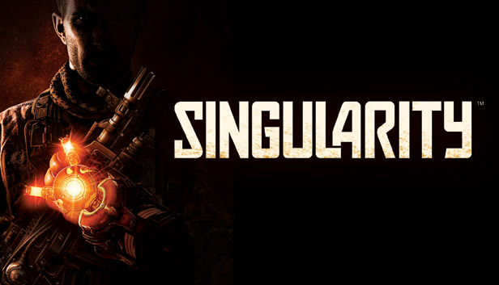
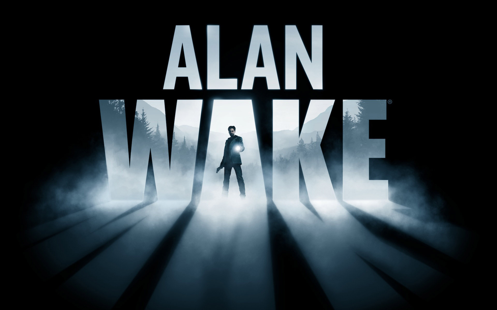
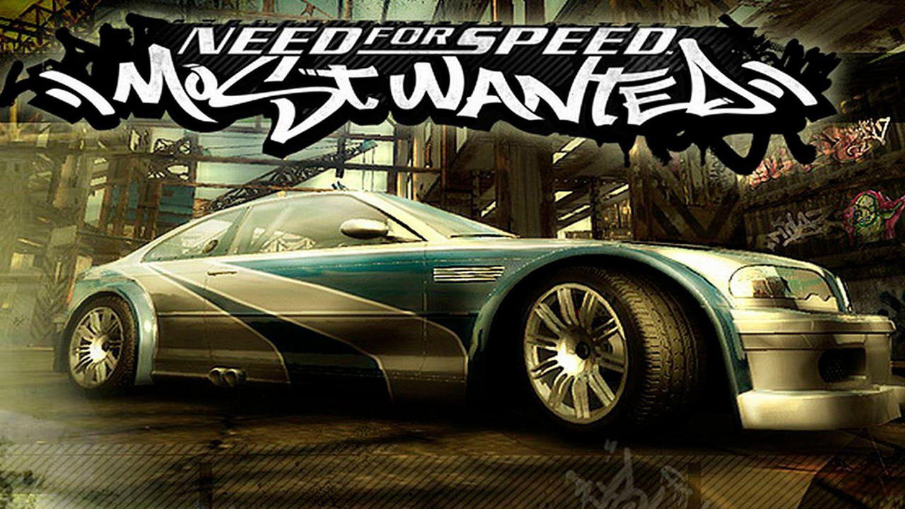

Hi everyone, I would like to introduce you to my favorite chilehood games, I've played these a lot with my brother when I was a Kid, first I want to show I was my setup (Computer) and then the top 4 Games by category, if you want to jump direct to the category that you want, you can do it by clicking the corresponding button.
Setup configuration
My first gaming Computer came with the following configuration:
Processor: i7 3th generation
Mother Board: Intel - Compatible with the procesor
Graphic card: Nvidia Geforce Gt 730
Hard Drive: 1 Tb HHD
If you want to see a video comparing the graphic card running actual games on 2024 you can go to the following Link: Nvidia Gt 730 - Test 2024 Games it was't the most powerful graphic card for those actual games, but for us it was the best!
PC Games by Categories
Action/Adventure category

Assasin's creed 3 relased on 2012
Shooter category

Singularity relased on 2010
Horror category

Alan Wake relased on 2010
Racing category

Need for Speed: Most wanted relased on 2005